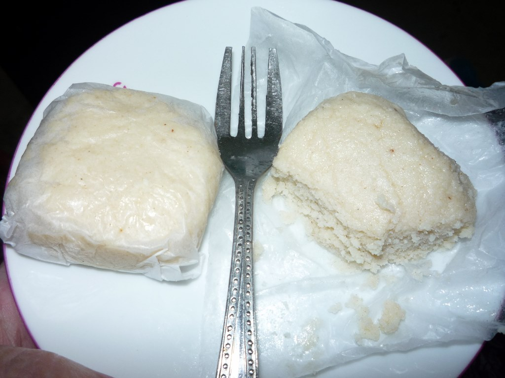

Sudhir Gosh's Chanar Polao

Chanar Polao is one kind of delicious Bengali dessert . Usauly Bengali people like to cook it on special day like Eid, Puja.In mymensingh Sudhir Gosh's Chanar polao is very famous for it's amazing taste.
Monda

Gopal Paul, the first Monda maker was lived at the Muktagacha in the Mymensingh District. That is why the Monda is also known as Muktagachar Monda.In mymensingh monda is very well known sweets.You can buy it from any resturant of mymensing.